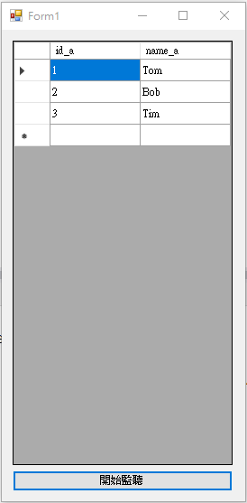
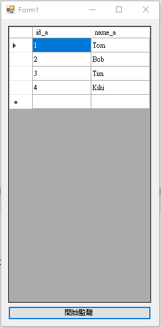

SqlDependency 是用來監聽資料庫裡的 Table 資料是否有變動，
當資料有變動時，則會觸發 SqlDependency 所指定的 Handler，
去作後續處理。以下為範例展示。
建立一個範例資料庫
CREATE DATABASE MYDATABASE; GO USE MYDATABASE; GO CREATE TABLE TABLE_NAME ( id_a INT NULL ,name_a NVARCHAR(50) NULL ) GO INSERT TABLE_NAME VALUES (1, 'Tom'); INSERT TABLE_NAME VALUES (2, 'Bob'); INSERT TABLE_NAME VALUES (3, 'Tim');
開啟 Server Broker
ALTER DATABASE MYDATABASE SET ENABLE_BROKER WITH ROLLBACK IMMEDIATE;
Form1.Designer.cs 內容為
namespace WindowsFormsApp1
{
partial class Form1
{
/// <summary>
/// Required designer variable.
/// </summary>
private System.ComponentModel.IContainer components = null;
/// <summary>
/// Clean up any resources being used.
/// </summary>
/// <param name="disposing">true if managed resources should be disposed; otherwise, false.</param>
protected override void Dispose(bool disposing)
{
if (disposing && (components != null))
{
components.Dispose();
}
base.Dispose(disposing);
}
#region Windows Form Designer generated code
/// <summary>
/// Required method for Designer support - do not modify
/// the contents of this method with the code editor.
/// </summary>
private void InitializeComponent()
{
this.btnStart = new System.Windows.Forms.Button();
this.dataGridView1 = new System.Windows.Forms.DataGridView();
((System.ComponentModel.ISupportInitialize)(this.dataGridView1)).BeginInit();
this.SuspendLayout();
//
// btnStart
//
this.btnStart.Location = new System.Drawing.Point(12, 488);
this.btnStart.Name = "btnStart";
this.btnStart.Size = new System.Drawing.Size(244, 23);
this.btnStart.TabIndex = 0;
this.btnStart.Text = "開始監聽";
this.btnStart.UseVisualStyleBackColor = true;
this.btnStart.Click += new System.EventHandler(this.btnStart_Click);
//
// dataGridView1
//
this.dataGridView1.ColumnHeadersHeightSizeMode = System.Windows.Forms.DataGridViewColumnHeadersHeightSizeMode.AutoSize;
this.dataGridView1.Location = new System.Drawing.Point(12, 12);
this.dataGridView1.Name = "dataGridView1";
this.dataGridView1.RowTemplate.Height = 24;
this.dataGridView1.Size = new System.Drawing.Size(244, 470);
this.dataGridView1.TabIndex = 1;
//
// Form1
//
this.AutoScaleDimensions = new System.Drawing.SizeF(6F, 12F);
this.AutoScaleMode = System.Windows.Forms.AutoScaleMode.Font;
this.ClientSize = new System.Drawing.Size(270, 522);
this.Controls.Add(this.dataGridView1);
this.Controls.Add(this.btnStart);
this.Name = "Form1";
this.Text = "Form1";
((System.ComponentModel.ISupportInitialize)(this.dataGridView1)).EndInit();
this.ResumeLayout(false);
}
#endregion
private System.Windows.Forms.Button btnStart;
private System.Windows.Forms.DataGridView dataGridView1;
}
}
Form1.cs 內容為
using System;
using System.Data;
using System.Data.SqlClient;
using System.Windows.Forms;
namespace WindowsFormsApp1
{
public partial class Form1 : Form
{
string ConnectionString = "Data Source=" + "DESKTOP-xxx\\SQLEXPRESS" + ";Initial Catalog=" + "MYDATABASE" + ";User ID=" + "sa" + ";Password=" + "xxx";
public Form1()
{
InitializeComponent();
}
private void btnStart_Click(object sender, EventArgs e)
{
//SqlDependency 註冊 ConnectionString
SqlDependency.Start(ConnectionString);
//建立 SqlDependency 監聽與處置
SqlDependencyWatch();
//先對dataGridView1做更新
RefreshTable();
}
private void SqlDependencyWatch()
{
//dependency固定寫法，藉由 dependency 查詢整張 table ，來監聽該張 table 資料是否有異動
string sSQL = "select id_a,name_a from [dbo].[TABLE_NAME]";
using (SqlConnection connection = new SqlConnection(ConnectionString))
{
using (SqlCommand command = new SqlCommand(sSQL, connection))
{
command.CommandType = CommandType.Text;
connection.Open();
//將command放進SqlDependency
SqlDependency dependency = new SqlDependency(command);
//當發生資料庫有變動時，dependency要做什麼處置
dependency.OnChange += new OnChangeEventHandler(SQLTableOnChange);
//執行一次監聽
SqlDataReader sdr = command.ExecuteReader();
}
}
}
private void SQLTableOnChange(object sender, SqlNotificationEventArgs e)
{
//觸發後再開啟一次監聽事件
SqlDependencyWatch();
//並對dataGridView1做更新
RefreshTable();
}
private void RefreshTable()
{
string sSQL = "select id_a,name_a from [dbo].[TABLE_NAME]";
DataTable datatable = new DataTable();
using (SqlConnection connection = new SqlConnection(ConnectionString))
{
connection.Open();
using (SqlCommand cmd = new SqlCommand(sSQL, connection))
{
using (SqlDataAdapter dr = new SqlDataAdapter(sSQL, connection))
{
dr.Fill(datatable);
//這邊要注意，因為SqlDependency是屬於另外個執行緒
//所以要使用Invoke來做UI的更新
Action helloDelegate = delegate () { dataGridView1.DataSource = datatable; };
this.Invoke(helloDelegate);
}
}
}
}
}
}
當開始監聽時，如下畫面

這時我們在 SSMS 下 SQL 指令，讓資料變動一下，以便去觸發 SqlDependency handler
INSERT TABLE_NAME VALUES (4, 'Kiki');
成功觸發 SqlDependency handler，做了即時更新畫面

小結：
SqlDependency 的使用，主要有五步驟：
1、開啟 Server Broker。
2、藉由 SqlDependency 實體去註冊 ConnectionString。
3、將所要監聽目的 Table 的指令 command 放進 SqlDependency 實體。
4、指定 SqlDependency 實體的 OnChangeEventHandler 之觸發處理方法。
5、執行一次監聽。
參考資料：